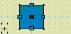
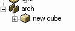

Caps and Arches (Patches)
Updated 22 Apr 2001
- QuArK Information Base
- 2. Map editing
- 2.4. Shape Builders
|
|
Caps and Arches (Patches)
Updated 22 Apr 2001
|
Upper levels: - QuArK Information Base - 2. Map editing - 2.4. Shape Builders |
|
2.4.2. Caps and Arches (Patches) |
[ - - ] |
Patch-based 'Caps' and arches are made by the same shape-builder, and arches are probably its most important function, so that's what gets discussed most below. |
|
Index |
|
Making an arch |
tiglari - 22 Apr 2001 | [ Top ] |
|
 To make an arch, first click on the cube icon in the user panel, or use whatever technique you normally use to make a more or less cubical brush. Then, in a side-on map-view, select the brush and 'RMB -> Curves -> Arch'. An arch-shape will appear inside the brush, and if the brush isn't selected, it will be invisible. If you open up a 3d view and look around, you'll see that there are patches with textures on the front and back, and inside curve.  What's happened is that the original brush has been put inside a duplicator, which makes it invisible unless selected. You can see this by looking at the tree view, as illustrated: The duplicator then controls the production of the actual patches comprising the arch, by means that we will shortly start manipulating. Of course, due to the one-sided visibility of patches, the arch isn't a very satisfactory piece of archicture until we put it into a suitable architectural environment. But first, a bit more about the arch itself. You might think that once made, it's made, and what you see is all you get, but not at all. First, click on the arch until its `guide brush' (the one inside its duplicator) is selected. We can now drag this brush around, and the arch will move, and we can reproportion the arch by dragging the individual faces. Since these are ordinary faces, which provide data to the duplicator code the makes the arch patches, we can do all the ordinary face stuff to them, such as tag/glue.
The inside of the arch is unfortunately not so straightforward. It would be nice if there was some way to wrap the texture on the front or back onto the inside curve, but there isn't, at least without using specially pre-prepared and proportioned textures. So we basically are stuck with a misalignment here, which can be ameliorated by using some fairly bland, unpatterned texture on the inside face (there's a further amelioration we'll get to later, after dealing with the arch/cap duplicator specifics).
But if you look closely with an patterned texture, you'll see that the texture scale is compressed somewhat on the curved portion; that's because its being positioned and scaled on the curve so that it will join up smoothly with what's on the walls, but the distance around the flat wall face is longer than on the smooth curve-face. This is because of a bit of tricky coding in the duplicator, whereby the texture scale is compressed just enough so that the distance in texture-space around the curve equals the distance, w.r.t the top-face scale, around the three faces defining the arch. A final point: for some textures, especially small and/or non-square ones, this positioning trick doesn't work and the textures come out strangely warped. This is a bug I haven't tracked down yet; to use these texture on inside arches, you have to check the `stretchtex' box, & you'll have to manage alignments manually. |
|
Caulking |
tiglari - 22 Apr 2001 | [ Top ] |
|
The arch now looks OK, but we've left out an important step,
caulking. The problem with it now is that the engine will
actually draw the brush-faces that are concealed by the curves,
which is a waste, because they can't be seen. The solution
is to attach a the 'special/caulk' shader to the hidden faces.
For the top slab that sits over the arch, we can easily just
do this, but for the sides it's a bit more of a chore, because
part of the inside faces of the walls are exposed, and others
aren't (this is also a 't-junct', which is Evil. So there's a little trick to speed up caulking. Tag say the
left face of the guide-brush of the arch, then select the
right-face of the left wall-block. Now RMB|More Tagging|Caulk
from tagged. The wall will be split into two, and the caulk
pasted onto the part of the wall that's hidden. In QuArK, you can see a bit of the caulk-texture where the curve
and the wall join, but in Quake3a you can't (I'm not sure if
QuArK's behavior is a bug or a feature). Of course, if you
reproportion the arch, you'll need to adjust the walls as well;
a good application for Tag Face/Glue to Tagged. |
|
Specifics |
tiglari - 01 Mar 2001 | [ Top ] |
|
|
Troubleshooting |
tigalri - 01 Mar 2001 | [ Top ] |
|
The arch/cap duplicator code is fairly complicated, and
various things can go wrong. The typical symptom is
that the arch disappears, because something goes wrong with the
code that generates its `images'; (the patches that it's
supposed to produce, in this case). When this happens, inspect the duplicator in the tree view and check that the following things are true:
If all this seems OK and it still doesn't work, something
deeper is wrong, post on the quark or quark-python forum.
Two other things that might go wrong are:
For the second, the problem is that Q3A is tesselating the two
patches to different extends. Currently, the fix is to dissociate
the images of the duplicators, then use the mesh|double rows/column
RMB commands to increase the number of control points along the
edge, and also Tag Point|Knit edge to tagged to check that
everything is lined up right. I soon hope to add some more
specifics to the duplicators that will have them generate thicker
meshes, so that dissociation won't be necessary. Also more options,
so that invisible patches can be excluded from complex
architecture without dissociation. At present, finding a bad arch could be difficult; there should eventually be diagnostic functions for these duplicators and some sort of map-check for them to pick up the bad ones. |
|
Techniques |
tiglari - 01 Mar 2001 | [ Top ] |
| ||||||||||||||